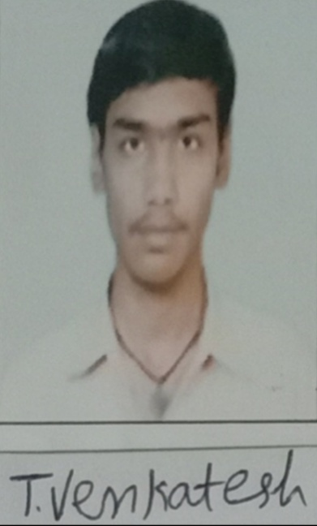

TIVARI VENKATESH 
Software Developer
Profile:
Seeking an entry-level opportunity with an esteemed
organization where I can utilize my skills and
enhance learning in the field of work. Capable of
mastering new skills
Project
Title: Design of secure Authenticated Key
Management Protocol for Cloud Computing
Environments.
Descriptive:A large number of services have
migrated to cloud platform. To convenient
access to the services and protect the privacy
in the public network three-factor MAKA
protocols for multi-server architecture gain
wide attention.
Personal Details
-
Father Name: V Chitti Prasad
-
Mother Name: Nageswari Bai
-
D.O.B: 29-11-1995
-
Marital Status:Unmarried
Personal Skills
- Quickly Adapt Environments
- Ability to work as an individual and in team.
- Ability to face the problems
- Ability to creative thinking.
Technical Skills
-
Languages: c, java, c#, sql
-
Scripting: HTML, CSS, JavaScript
-
Databases: SQL Server, MS access, Oracle
-
Applications: MS office
-
Typing: 40-45-WPM
Education
-
MCA from TJPS college in 2020 with 74%.
-
B.sc from Mahatma Gandhi College in 2017 with 66%.
-
12th from Yadava Junior College in 2013 with 76%.
-
SSC from Little Flower Public School in2011 with 75%.
Contact Details
Decleration: The solemnly submitted above details are correct and true to best of my knowledge.
Signature